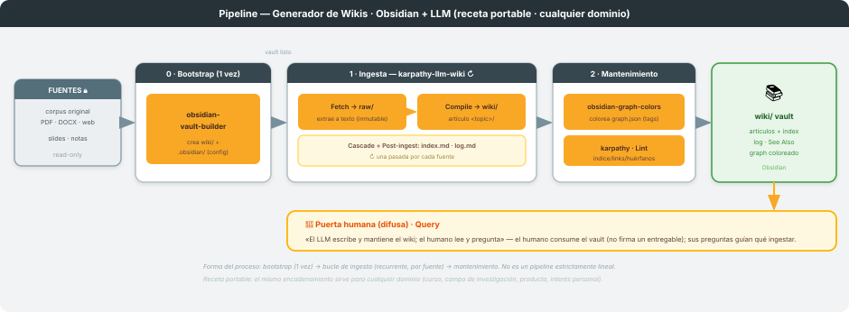
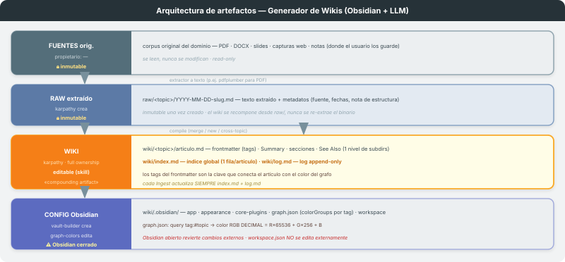
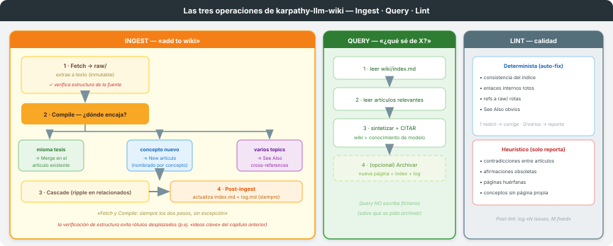
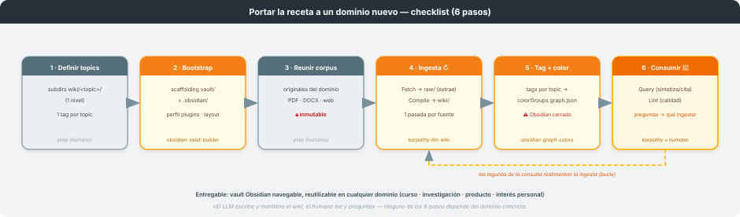

Skills involucrados: obsidian-vault-builder → karpathy-llm-wiki → obsidian-graph-colors
Entrada: un corpus de fuentes de cualquier dominio · Salida: un vault de Obsidian navegable
Última actualización: 2026-06-06
Receta portable. Este proceso compila un corpus de fuentes de cualquier dominio (un curso, un campo de investigación, un producto, un interés personal) en un vault de Obsidian navegable, encadenando tres skills acoplados por fichero. Nada de lo que sigue depende de un tema concreto: lo único que cambia entre wikis es el contenido del corpus y los nombres de topics/tags. (Este repositorio es la generalización portable de un proceso construido originalmente para una asignatura universitaria, extraído como recurso reutilizable independiente.)
El proceso compila un corpus de fuentes (PDFs, DOCX, slides, capturas web, notas — lo que sea) en un vault de Obsidian navegable, y lo mantiene en el tiempo. El principio rector es el de Karpathy: «el LLM escribe y mantiene el wiki; el humano lee y pregunta», y el wiki es un artefacto que se compone (compounding) con el tiempo.

Intervienen tres skills con roles temporales distintos, con karpathy-llm-wiki como punto de
entrada y orquestador del ciclo de vida:
obsidian-vault-builder — bootstrap (una vez): crea la estructura del vault y la
configuración .obsidian/ (5 archivos JSON) sin necesidad de abrir Obsidian.karpathy-llm-wiki — bucle recurrente: ingiere cada fuente (una pasada por fuente),
responde consultas (Query) y revisa la calidad (Lint). Es quien llama a los otros dos en los
momentos que corresponde.obsidian-graph-colors — mantenimiento: colorea el Graph view por los tags del frontmatter
de los artículos.Cuatro capas, de la fuente inmutable a la configuración del vault. El acoplamiento es por fichero,
no por código: ningún skill lee la salida en memoria del anterior, se comunican a través de
artefactos persistidos en disco (raw/ → wiki/ → .obsidian/graph.json). Esto hace el proceso
reanudable y auditable.

| Capa | Directorio | Propietario | Mutabilidad |
|---|---|---|---|
| Fuentes originales | el corpus del dominio (donde el usuario lo guarde) | — | 🔒 inmutable (read-only) |
| Raw extraído | raw/<topic>/YYYY-MM-DD-slug.md |
karpathy-llm-wiki (crea) |
🔒 inmutable una vez creado |
| Wiki (artículos) | wiki/<topic>/articulo.md + wiki/index.md + wiki/log.md |
karpathy-llm-wiki (full ownership) |
editable por el skill |
| Config Obsidian | wiki/.obsidian/ (graph.json…) |
obsidian-vault-builder (crea) · obsidian-graph-colors (colores) |
editable (⚠ Obsidian cerrado) |
Reglas de capa: el corpus de fuentes nunca se modifica; el raw/ es inmutable una vez creado
(el wiki se recompone desde raw/, nunca se re-extrae el binario); wiki/ es propiedad plena
del skill nuclear; cada Ingest actualiza siempre index.md + log.md. El soporte de un
solo nivel de subdirectorios de topic es deliberado.
La capa
raw/extraída es la diferencia clave respecto a un wiki ingenuo: separa la extracción (de un PDF opaco a texto) de la compilación (de texto a artículo). Si más adelante cambia el criterio editorial, el wiki se reconstruye desderaw/sin volver a tocar los binarios.
karpathy-llm-wikiEl skill nuclear tiene tres operaciones; la más rica es Ingest, con su árbol de decisión de compilación.

Fetch (extrae la fuente a texto y la guarda en raw/, inmutable; verifica antes la estructura
de la fuente — que los rótulos de sección describan de verdad lo que hay debajo) → Compile
(decide dónde encaja: misma tesis → merge en el artículo existente · concepto nuevo → artículo
nuevo nombrado por el concepto · varios topics → cross-references en See Also) → Cascade
(actualiza artículos afectados) → Post-ingest (actualiza index.md + log.md). Fetch y Compile
son siempre los dos pasos, sin excepción.
Lee index.md → lee los artículos relevantes → sintetiza y cita (wiki > conocimiento de
entrenamiento). No escribe ficheros salvo que se pida archivar la respuesta.
raw/
rotas, See Also obvios (1 match → corrige; 0/varios → reporta).A diferencia de una tubería lineal, este proceso tiene tres cadencias distintas:
obsidian-vault-builder prepara el vault. No se repite.karpathy-llm-wiki ejecuta Ingest una vez por cada fuente.
El wiki crece de forma incremental.obsidian-graph-colors recolorea el grafo; karpathy hace
Lint y responde Query.El acoplamiento sigue siendo por fichero, pero la topología es setup + loop + maintenance,
no una tubería de una sola pasada (es la tercera topología reconocida por build-single-process).
La puerta humana de este proceso no es una firma sobre un entregable, sino el consumo continuo: el humano lee el wiki y pregunta (Query); sus preguntas y lagunas guían qué ingestar a continuación. Es la forma más laxa de puerta humana, pero cumple el mismo principio: el humano dirige, el LLM ejecuta.
graph.json: los colorGroups usan queries por tag (tag:#<topic>) y color en RGB
decimal (R×65536 + G×256 + B). Los tags vienen del frontmatter de los artículos, así que
etiquetar de forma consistente es lo que hace funcionar el coloreado.graph.json externamente: si está abierto, vuelca su
estado en memoria al disco y revierte el cambio externo.workspace.json no se edita externamente: Obsidian genera IDs y textos con tildes; un
workspace.json externo mal formado hace que Obsidian lo rechace y resetee también graph.json.
Por eso obsidian-vault-builder lo genera siempre con un script (build_workspace.py), nunca a
mano.Aquí está el valor de la versión «externa»: para levantar un wiki de un tema nuevo se reutiliza la receta sin cambios, recorriendo seis pasos.

| # | Paso | Actor | Detalle |
|---|---|---|---|
| 1 | Definir topics | humano (prep) | subdirectorios wiki/<topic>/ (un nivel) y un tag por topic |
| 2 | Bootstrap del vault | obsidian-vault-builder |
crea wiki/ + .obsidian/; elige perfil de plugins y layout |
| 3 | Reunir el corpus | humano (prep) | originales del dominio; se mantienen inmutables |
| 4 | Ingesta iterativa | karpathy-llm-wiki ↻ |
una pasada Fetch+Compile por fuente; el wiki se compone |
| 5 | Tag + color | obsidian-graph-colors |
tags consistentes por topic → colorGroups en graph.json |
| 6 | Consumir | karpathy + 👤 |
Query para responder, Lint para higiene; las lagunas realimentan la ingesta |
Ninguno de los seis pasos depende del dominio concreto. Lo único que cambia entre un wiki de biología molecular y uno de, por ejemplo, derecho mercantil, es el contenido del corpus y los nombres de los topics/tags — nunca la mecánica.
| Skill | Trigger | Acción |
|---|---|---|
obsidian-vault-builder |
"bootstrap vault" / "crear vault" | Crea wiki/ + .obsidian/ |
karpathy-llm-wiki |
"build a wiki" / "add to wiki" / "ingesta esta fuente" | Fetch + Compile + Cascade + index/log |
karpathy-llm-wiki |
"what do I know about X?" / "¿qué sé de X?" | Query: sintetiza y cita (no escribe) |
karpathy-llm-wiki |
"lint del wiki" | Auto-fix determinista + reporte heurístico |
obsidian-graph-colors |
"/graph-colors" / "colorear el grafo" | Edita graph.json por tags (Obsidian cerrado) |
| Aspecto | Decisión | Razón |
|---|---|---|
raw/ separado del corpus |
Capa intermedia de texto extraído, inmutable | Trazabilidad fuente → artículo; el wiki se recompone sin re-extraer |
1 nivel de subdirs en wiki/ |
Sin anidamiento profundo | Simplicidad de navegación e índice |
| Bootstrap único | obsidian-vault-builder no se repite |
El vault se crea una vez; luego solo crece |
| Puerta humana difusa | Lectura/Query en lugar de firma | El wiki es consumo continuo, no un entregable puntual |
| Verificación de estructura en Fetch | Comprobar que los rótulos describen el contenido real | Evita arrastrar rótulos desplazados (p.ej. «ideas clave» del capítulo anterior) |
Obsidian cerrado al editar graph.json |
Restricción operativa | Obsidian revierte cambios externos si está abierto |
workspace.json no se toca |
Solo Obsidian / el script lo gestionan | Evita resets de configuración |
karpathy como orquestador |
Punto de entrada único que delega bootstrap y colores | Los tres skills siguen modulares, acoplados solo por fichero |
Diagramas en docs/svg/. Skills en
.claude/skills/{karpathy-llm-wiki,obsidian-vault-builder,obsidian-graph-colors}/.
Receta portable y domain-agnostic: ver el checklist de §7 para aplicarla a un dominio nuevo.